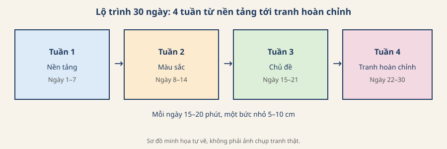

Lộ trình 30 ngày vẽ màu nước cho người mới
Tác giả: Ruler
Cả 30 ngày trong lộ trình này đều lấy bài tập từ 19 bài còn lại của website này. Mỗi ngày bạn vẽ 15–20 phút, làm đúng một bài tập nhỏ, và mỗi ngày ghi rõ bài nào và làm bài tập nào trong bài đó. Bốn giai đoạn của lộ trình đi theo đúng 4 bước trên trang chủ: chọn dụng cụ, pha màu, tập loang màu, rồi vẽ bức đầu tiên. Bạn không cần vẽ đẹp ngay ngày đầu. Bạn chỉ cần vẽ mỗi ngày, và ngày 30 bạn sẽ thấy mình vẽ khác hẳn ngày 1.

Sơ đồ minh họa được vẽ riêng cho website — không phải ảnh chụp tranh thật. Sơ đồ 4 bước: bước 1 chọn dụng cụ, bước 2 pha màu, bước 3 tập loang màu, bước 4 vẽ bức đầu tiên.
Vì sao 30 ngày, mỗi ngày 15–20 phút
Ba mươi ngày đủ dài để việc vẽ thành thói quen, nhưng đủ ngắn để bạn thấy được đích. Dee viết trên ArtsyDee rằng khi vẽ màu nước, đều đặn thắng cường độ mọi lúc. Bạn vẽ một bức nhỏ mỗi ngày, khổ khoảng 5–10 cm, mất 15–20 phút. Sau 30 ngày, bạn có một cuốn sổ vẽ đầy tranh và kỹ năng mà bạn sẽ giữ được lâu dài.
Bạn dùng một cuốn sổ vẽ màu nước cho cả 30 ngày, không dùng tờ rời. Sổ vẽ giữ mọi bài tập ở một chỗ, và bạn lật từ trang đầu tới trang 30 sẽ thấy tiến bộ của mình. Bạn dùng sổ khổ A5 hoặc nhỏ hơn, giấy 300 gsm cold press. Bộ đồ bạn dùng cả tháng là bộ đồ chuẩn của website này: hộp màu pan 12 màu, ba cây cọ gồm cọ tròn cỡ 8, cọ tròn cỡ 4 và cọ dẹt, hai lọ nước, đĩa trắng, khăn giấy, băng dính giấy, bút chì HB và một tấm bìa cứng kê giấy.
Ở Việt Nam, bạn không cần mua sổ đắt tiền mới bắt đầu: giấy vẽ màu nước Aquaro Takeyo 300 gsm cold press khổ A5, túi 10 tờ, Hana Art Shop bán 26.000 đồng một túi. Nếu mỗi ngày bạn vẽ một tờ khổ A5 thì ba túi, tổng 78.000 đồng, là đủ giấy cho cả 30 ngày. Cửa hàng ở 384 Đội Cấn, Ba Đình, Hà Nội và có bán online trên trang của cửa hàng.
Mỗi buổi xong, bạn ghi một dòng vào sổ: hôm nay nước nhiều hay ít, màu loang ra sao, chỗ nào ưng, chỗ nào chưa ưng. Dòng ghi chú đó giúp buổi tập sau của bạn tiến bộ nhanh hơn là vẽ mười tờ mà không ghi gì. Bạn lỡ một ngày thì vẽ tiếp ngày hôm sau, không cần vẽ bù hai ngày. Bạn giữ lại mọi trang, kể cả trang xấu, vì nhìn lại trang xấu bạn mới thấy mình đã sai ở đâu.
Giai đoạn 1 — Bước 1: Chọn dụng cụ (ngày 1–5)
Năm ngày đầu bạn chuẩn bị đúng bộ đồ rồi học cách giữ nó: mua đủ đồ, tô bảng màu, đọc nhãn, thử giấy mới và rửa cọ.
Ngày 1 — Bộ đồ tối thiểu để bắt đầu vẽ màu nước: Làm theo bảng quyết định mua đồ trong bài: món nào nằm ở cột mua ngay thì mua, món nào nằm ở cột đợi sau thì ghi vào danh sách sau này, món nào nằm ở cột không cần thì đừng mua dù cửa hàng giới thiệu hay. Bạn mua giấy trước tiên, vì giấy là khoản đáng tiền nhất.
Ngày 2 — Bộ đồ tối thiểu để bắt đầu vẽ màu nước: Tô bảng màu của chính mình: tô từng màu trong hộp lên giấy nháp, một vệt đậm và một vệt nhạt. Bạn sẽ biết màu nào trong, màu nào đục, màu nào khô xong đậm hơn lúc ướt.
Ngày 3 — Chọn giấy và cọ màu nước: đọc nhãn và thử trước khi mua: Đọc nhãn của chính bộ đồ bạn đã mua: bốn chữ trên nhãn giấy là định lượng, thành phần, bề mặt và khổ; ba thông tin trên nhãn cọ là hình dáng, cỡ và loại lông. Bạn đối chiếu với bảng đọc nhãn nhanh trong bài và ghi lại: giấy của bạn là loại nào, cọ của bạn là loại nào.
Ngày 4 — Chọn giấy và cọ màu nước: đọc nhãn và thử trước khi mua: Làm bài thử năm phút tại nhà: cắt tờ giấy thử thành ba dải, dải thứ nhất làm ướt đều rồi chạm một màu xanh dương nhạt, dải thứ hai vẽ một vệt màu trên giấy khô, dải thứ ba tô một lớp màu nhạt, đợi khô hẳn rồi tô thêm một lớp khác lên trên. Bạn ghi ba dòng so sánh với tờ giấy cũ của mình: giấy mới khô nhanh hay chậm hơn, màu trong hay đục hơn, giấy có cong nhiều hơn không.
Ngày 5 — Chăm sóc cọ và bảo quản màu: rửa cọ, giữ dáng cọ và cất hộp màu: Làm bài tập rửa sâu cả bộ cọ trong một buổi: làm đủ 7 bước rửa cho mỗi cây cọ, dành nhiều thời gian cho bước rửa gót cọ, tạo lại dáng cọ bằng ngón tay rồi phơi khô nằm ngang trên khăn sạch. Bạn để hộp màu khô hẳn trước khi đậy nắp, và cất giấy nằm phẳng ở nơi khô ráo.
Giai đoạn 2 — Bước 2: Pha màu (ngày 6–10)
Năm ngày tiếp theo bạn chỉ pha màu: hiểu vòng màu, pha ba màu thứ cấp, rồi làm bảng pha màu của riêng mình.
Ngày 6 — Pha màu cơ bản: 6 màu gốc pha thành màu mới: Học vòng màu cùng quy tắc quan trọng nhất của bài: mỗi màu gốc có một bản ấm và một bản lạnh, và muốn pha một màu thứ cấp sạch thì chọn hai màu nghiêng về phía nhau, để màu gốc thứ ba không có mặt trong hỗn hợp. Bạn thử trên giấy nháp: hai màu nghiêng về nhau cho màu trong, hai màu nghiêng ra xa nhau cho màu trầm.
Ngày 7 — Pha màu cơ bản: Pha cam theo công thức trong bài: cam sáng là vàng ấm cộng đỏ ấm, cam trầm là vàng lạnh cộng đỏ lạnh. Bạn tô hai vệt lên giấy nháp và ghi lại: cam sáng hợp vẽ hoàng hôn, cam trầm hợp vẽ gạch, đất và quả chín.
Ngày 8 — Pha màu cơ bản: Pha xanh lá theo công thức trong bài: xanh lá sáng là vàng lạnh cộng xanh lạnh, xanh lá trầm là vàng ấm cộng xanh ấm, cho xanh ô liu, xanh xô thơm và xanh rừng. Bạn tô hai vệt lên giấy nháp: xanh lá sáng hợp vẽ lá non, xanh lá trầm hợp vẽ lá già và cây trong bóng mát.
Ngày 9 — Pha màu cơ bản: Pha tím theo công thức trong bài: tím sáng là đỏ lạnh cộng xanh ấm, tím trầm là đỏ ấm cộng xanh lạnh. Tím là màu dễ đục nhất trong ba màu thứ cấp, nên bạn thêm từng chút một và thử trên giấy nháp sau mỗi lần thêm.
Ngày 10 — Pha màu cơ bản: Làm bài tập bảng pha màu của riêng bạn theo đúng 4 bước trong bài: kẻ bảng và tô 3 màu lõi, pha 3 màu thứ cấp bằng 3 màu lõi (tím sáng, cam trầm, xanh lá trầm), thêm 3 màu bổ sung rồi pha 3 màu thứ cấp sáng, cuối cùng thêm 3 ô tối, xám, nâu và một thang đậm nhạt. Bạn ghi thêm ba ô màu tối, xám và nâu vào bảng: màu tối pha từ xanh ultramarine và nâu đất cháy, màu xám pha từ xanh ultramarine và một chút đỏ hồng, màu nâu pha từ bất kỳ màu xanh nào với bất kỳ màu cam hay đỏ ấm nào.
Giai đoạn 3 — Bước 3: Tập loang màu (ngày 11–17)
Bảy ngày này bạn tập kiểm soát nước và màu trên giấy: ba mức nước, ba bài tập loang, wash phẳng, chồng lớp và lấy màu ra.
Ngày 11 — Kỹ thuật loang màu wet-on-wet cho người mới: Học ba mức nước trên cọ (nhiều nước, vừa đủ ẩm, ít nước) cùng ba trạng thái của giấy (ướt bóng, ẩm bóng nhẹ, sắp khô). Bạn kiểm tra độ ướt bằng cách nghiêng tờ giấy về phía cửa sổ hoặc đèn: cả vùng giấy còn bóng đều thì còn ướt, chỉ còn vài chỗ bóng loang lổ thì giấy đang khô không đều.
Ngày 12 — Loang màu wet-on-wet: Làm bài tập đầu tiên trong ba bài tập nhỏ của bài: làm ướt toàn bộ tờ giấy, chạm màu xanh dương nhạt ở phía trên, chạm màu vàng nhạt ở phía dưới, chừa lại một khoảng trắng nhỏ làm mây bằng cách không chạm màu vào đó. Bài này dạy bạn kiểm soát mảng lớn và chừa trắng.
Ngày 13 — Loang màu wet-on-wet: Làm bài tập thứ hai: làm ướt chỉ vùng hình lá, không làm ướt cả tờ giấy, chạm màu xanh lá đậm vào giữa lá rồi chạm thêm một chút vàng vào một cạnh khi màu vẫn còn ướt. Màu sẽ lan trong khuôn hình lá và dừng lại ở mép khô.
Ngày 14 — Loang màu wet-on-wet: Làm bài tập thứ ba: làm ướt ba vùng tròn nhỏ tách nhau, mỗi vùng là một cánh hoa, chạm màu hồng hoặc tím vào giữa mỗi cánh để màu lan ra mép. Khi ba cánh đã khô, bạn dùng cọ tròn cỡ 4 vẽ thêm chấm giữa hoa và một cành nhỏ trên giấy khô.
Ngày 15 — Vẽ trên giấy khô (wet-on-dry): nét sắc, chồng lớp, chi tiết: Tập wash phẳng theo 4 bước trong bài: dựng bảng nghiêng, tô đường ngang đầu tiên, kéo vệt nước đọng ở mép xuống, rồi lấy vệt thừa ở cuối. Sau đó bạn làm bài tập thang độ đậm nhạt 5 ô: kẻ 5 ô vuông, tô ô đầu tiên đậm nhất rồi thêm nước dần cho tới ô thứ năm nhạt nhất.
Ngày 16 — Chồng lớp trong suốt (glazing): xây chiều sâu từng lớp mỏng: Học 6 bước chồng lớp đúng: lên kế hoạch từ nhạt đến đậm, tô lớp đầu tiên bằng màu trong và bám màu, đợi khô hoàn toàn, pha lớp glaze thật mỏng, tô lớp glaze một lượt, rồi đợi khô và nhìn trước khi chồng tiếp. Sau đó bạn làm bài tập bảng chồng lớp của riêng bạn: kẻ các dải ngang bằng 6 màu gốc, đợi khô hẳn, tô các dải dọc chồng lên, rồi ghi chú cặp nào cho màu sạch và cặp nào cho màu đục.
Ngày 17 — Chữa vùng trắng đã mất: lấy lại điểm sáng khi lỡ tô mất: Tập cách lấy màu ra dễ nhất trong bài: rửa cọ tròn cỡ 4 thật sạch, chạm đầu cọ ẩm lên vùng màu còn ướt để màu thấm vào cọ, lặp lại vài lần; vùng lớn thì dùng góc khăn giấy gấp nhọn để hút màu ra. Bạn tập ngay trên một mảng wash xanh dương: tô xong, lấy ngay một vệt trắng làm tia sáng. Từ hôm nay, bạn quyết định vùng trắng trước khi chạm màu, không đợi tô xong mới sửa.
Giai đoạn 4 — Bước 4: Vẽ bức đầu tiên (ngày 18–30)
Mười ba ngày cuối bạn vẽ tranh hoàn chỉnh: năm bức thiệp nhỏ trước, rồi hoa, phong cảnh, bầu trời, nước, cây, nhà, động vật, và ngày cuối vẽ bức kỷ niệm rồi giữ lại.
Ngày 18 — 5 bức vẽ nhỏ cỡ bưu thiếp cho người không chuyên: Vẽ bức thứ nhất trong bài: làm ướt toàn bộ tờ giấy, chạm màu vàng nhạt ở khoảng giữa làm mặt trời, màu cam nhạt ngay dưới vàng, màu hồng nhạt ở phía trên vàng, chừa lại một khoảng tròn trắng làm mặt trời. Khi lớp màu đã khô hẳn, bạn dùng cọ tròn cỡ 4 vẽ vài nét ngang màu xanh dương đậm ở nửa dưới làm mặt biển và một vệt sáng vàng nhạt làm đường phản chiếu.
Ngày 19 — 5 bức vẽ nhỏ: Vẽ bức thứ hai: phác nhẹ hình một chiếc lá bằng bút chì HB, làm ướt chỉ vùng trong hình lá, chạm màu xanh lá đậm vào giữa lá rồi chạm thêm một chút vàng vào một cạnh khi màu vẫn còn ướt. Khi lá đã khô, bạn dùng cọ tròn cỡ 4 vẽ đường gân giữa bằng màu xanh đậm hơn.
Ngày 20 — 5 bức vẽ nhỏ: Vẽ bức thứ ba: phác nhẹ ba hình tròn nhỏ xếp thành hình tam giác, làm ướt từng cánh một, chạm màu hồng hoặc tím vào giữa mỗi cánh để màu lan ra mép. Khi ba cánh đã khô hẳn, bạn dùng cọ tròn cỡ 4 chấm một chấm vàng đậm ở giữa hoa làm nhụy và vẽ thêm một cành nhỏ màu xanh lá.
Ngày 21 — 5 bức vẽ nhỏ: Vẽ bức thứ tư: làm ướt toàn bộ tờ giấy, chạm màu xanh dương rất nhạt ở phía trên làm bầu trời, màu xanh xám nhạt ở khoảng giữa làm dãy núi xa. Khi lớp đầu đã khô, bạn vẽ thêm dãy núi gần hơn bằng màu xanh dương đậm hơn, chỉ vẽ ở nửa dưới tờ giấy.
Ngày 22 — 5 bức vẽ nhỏ: Vẽ bức thứ năm: làm ướt toàn bộ tờ giấy, chạm màu xanh dương đậm ở phía trên và hai bên, chừa lại một khoảng tròn trắng ở phía trên làm mặt trăng và một vệt dọc trắng ở phía dưới làm đường phản chiếu. Khi lớp màu đã khô hẳn, bạn dùng cọ tròn cỡ 4 vẽ thêm vài nét ngang ngắn màu xanh đậm hơn ở nửa dưới làm sóng nước.
Ngày 23 — 5 bức hoa lá cỡ bưu thiếp: tulip, hướng dương, hoa giấy, loa kèn, hoa lan: Vẽ bức hoa tulip: vẽ hai cánh ngoài bằng hai nét bầu dục đặt cạnh nhau, hòa nửa trên bằng nước sạch và chừa trắng ở giữa, vẽ thân bằng một nét dài hơi lượn sóng, vẽ lá bằng nét dài mỏng, rồi chấm tâm bằng những chấm nhỏ thành hình chữ V.
Ngày 24 — Phong cảnh nhỏ: núi, biển, trăng — vẽ từ xa đến gần: Vẽ cảnh núi xa theo 4 bước trong bài: vẽ bầu trời bằng loang màu ướt trên ướt, vẽ núi xa bằng màu tím xám nhạt khi bầu trời còn hơi ẩm, vẽ núi giữa đậm hơn một bậc, rồi vẽ núi gần bằng màu tối nhất và thêm vài cây thông bằng nét tam giác nhỏ màu tối dọc theo sườn núi.
Ngày 25 — Vẽ mây và bầu trời: mây trắng, mây bão, hoàng hôn: Làm bài tập ba bầu trời trong một buổi: lấy ba tờ giấy nhỏ, mỗi tờ một bầu trời — mây trắng, mây bão, hoàng hôn — đặt hẹn giờ 20 phút cho mỗi tờ. Sau khi cả ba khô, bạn đặt cạnh nhau, giữ lại tờ bạn thích nhất và dán vào sổ vẽ.
Ngày 26 — Vẽ nước: sông, biển, mưa — mặt nước phẳng, gợn sóng và phản chiếu: Làm bài tập một hồ, ba trạng thái: vẽ cùng một hồ ba lần trên ba tờ giấy nhỏ — lần một mặt hồ phẳng lặng với bóng cây đối xứng, lần hai mặt hồ có gió với gợn sóng ngang, lần ba mặt hồ lúc mưa với vòng tròn chấm nhỏ. Bạn dùng cùng một bố cục cho cả ba bức: cây ở bờ trái, đồi ở bờ phải, bầu trời chiếm một phần ba phía trên.
Ngày 27 — Vẽ cây và tán lá: cây lá rộng, cây thông và rừng thông: Vẽ cây thông theo 4 bước trong bài: vẽ nhẹ một hình tam giác làm khung tổng thể, vẽ một thân thẳng hẹp bằng màu nâu tông giữa, vẽ cành bằng nét chéo xuống dài dần về phía dưới, rồi vẽ lá kim bằng nét ngắn và nhanh, chừa khoảng trắng cho tuyết nếu bạn vẽ cảnh mùa đông.
Ngày 28 — Vẽ nhà và phố nhỏ: nhà, cửa sổ, bóng đổ và người qua đường: Làm bài tập dãy nhà 4 căn trong 30 phút: đặt hẹn giờ và dừng đúng giờ, dùng lưới chia nhà thành mái nhà, tầng một, tầng trệt và vỉa hè, tô 4 màu pastel khác nhau cho 4 mặt tiền, vẽ cửa sổ bằng màu tối pha từ xanh ultramarine và nâu đất, rồi thêm 3 người qua đường bằng 3 nét đơn giản.
Ngày 29 — Vẽ động vật nhỏ: chim, cá, mèo — vẽ bằng hình khối đơn giản: Làm bài tập ba con vật trong một buổi: vẽ chim bằng hai hình bầu dục, cá bằng hình bầu dục và đuôi tam giác, mèo bằng hình tròn và hai tai tam giác, dùng cùng một bảng màu giới hạn 3 màu — vàng, xanh dương và cam — cho cả ba con. Bạn đặt ba bức cạnh nhau và xem con nào giống thật nhất, con nào bạn thích nhất.
Ngày 30 — Vẽ hoa theo mùa: đào, sen, cúc — ba loài hoa, ba mùa: Ngày cuối bạn vẽ bức kỷ niệm rồi giữ lại. Vẽ hoa đào mùa xuân theo 5 bước trong bài: chấm 5 chấm tròn, kéo mỗi chấm thành cánh bằng nước sạch, chấm một chấm hồng đậm hơn ở gốc mỗi cánh, vẽ cành bằng nét cong hơi ngoằn ngoèo, rồi thêm nhị hoa và lá. Vẽ xong, đối chiếu bức vừa vẽ với 7 lỗi trong bài 7 lỗi thường gặp khi mới vẽ màu nước và cách sửa: màu đục, vệt loang hình hoa, viền cứng, wash loang lổ, chồng lớp khi lớp dưới chưa khô, mất vùng trắng, giấy cong. Cuối cùng, cất bức tranh theo 3 nguyên tắc trong bài Giữ tranh màu nước khỏi phai và ẩm: treo, đóng khung và cất giữ: phẳng, khô và không axit — ghi ngày vẽ và tên bức tranh ở mặt sau tờ giấy bằng bút chì nhẹ.
Sau 30 ngày: giữ thói quen
Ngày 30 không phải kết thúc, mà là bắt đầu thói quen vẽ mỗi ngày. Bạn tiếp tục vẽ mỗi ngày, nhưng giờ bạn tự chọn chủ đề dựa trên những gì bạn khám phá trong 30 ngày qua. Bạn đặt thử thách mới cho mình: vẽ một góc nhà quen thuộc mỗi tuần một lần, hoặc vẽ đủ bốn mùa của cùng một cái cây.
Bạn mua thêm đồ dựa trên 30 ngày vừa qua, và chỉ mua món mà 30 ngày đó cho thấy bạn thật sự thiếu. Giấy cotton đáng thử khi bạn đã vẽ ướt trên ướt đều tay; một cây cọ tròn nhỏ đáng mua khi bạn vẽ chi tiết nhiều. Bạn để trải nghiệm 30 ngày dẫn dắt việc mua đồ của mình, không mua đồ trước khi biết mình cần gì.
Bạn giữ cuốn sổ vẽ 30 ngày của mình như một cuốn nhật ký: bạn lật lại và xem mình đã đi từ đâu tới đâu. Để thấy tiến bộ của mình rõ nhất, bạn vẽ lại mảng loang bầu trời ngày 12 trên một tờ mới và đặt cạnh tờ ngày 12. Bạn vẽ lại bức hoa đào ngày 30 sau 3 tháng nữa, và so sánh với bức hoa đào đầu tiên. Bạn sẽ thấy mình vẽ khác hẳn, và bạn sẽ biết mình đã học được gì.
Kết luận
Lộ trình 30 ngày chia thành 4 giai đoạn theo đúng 4 bước trên trang chủ: 5 ngày chọn dụng cụ, 5 ngày pha màu, 7 ngày tập loang màu và 13 ngày vẽ bức đầu tiên. Bạn vẽ mỗi ngày 15–20 phút, mỗi ngày một bài tập nhỏ trong một cuốn sổ vẽ. Bạn lỡ một ngày thì vẽ tiếp ngày hôm sau, không cần vẽ bù. Bạn giữ lại mọi trang, kể cả trang xấu, vì nhìn lại trang xấu bạn mới thấy mình đã sai ở đâu.
Bạn bắt đầu từ ngày 1: mở bài đầu tiên trong danh sách, làm đúng bài tập trong bài đó, rồi ghi một dòng vào sổ. Ba mươi ngày sau, bạn sẽ có một cuốn sổ đầy tranh và một thói quen vẽ mỗi ngày.
Nguồn tham khảo
- Dee, ArtsyDee, "30-Day Mini Watercolor Sketchbook Challenge + FREE Watercolor Templates!" — khi vẽ màu nước, đều đặn thắng cường độ mọi lúc: https://www.artsydee.com/30-day-mini-watercolor-sketchbook-challenge/
- Hana Art Shop, "Giấy Vẽ Màu Nước Aquaro Takeyo 50% Cotton" — giấy 300 gsm cold press khổ A5, túi 10 tờ, 26.000 đồng: https://hanaartshop.com/giay-ve-mau-nuoc-aquaro-takeyo-50-cotton-300gsm-200gsm-cold-pressed-a6-a5-a4